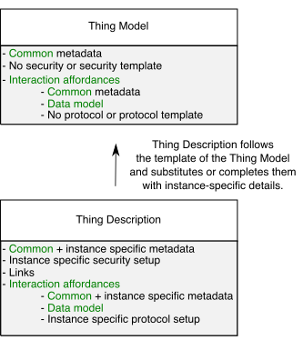

This document describes a formal model and a common representation
for a Web of Things (WoT) Thing Description 1.1.
A Thing Description describes the metadata and interfaces of Things,
where a Thing is an abstraction of a physical or virtual entity that
provides interactions to and participates in the Web of Things.
Thing Descriptions provide a set of interactions based on a small vocabulary
that makes it possible both to integrate diverse devices and
to allow diverse applications to interoperate.
Thing Descriptions, by default, are encoded in a JSON format that also allows
JSON-LD processing. The latter provides a powerful foundation to represent
knowledge about Things in a machine-understandable way.
A Thing Description instance can be hosted by the Thing itself or hosted
externally when a Thing has resource restrictions (e.g., limited memory space)
or when a Web of Things-compatible legacy device is retrofitted
with a Thing Description.
Furthermore, this document introduces the Thing Model, which allows to describe
only the model or class of an IoT entity. Thing Models can be seen as a template for Thing
Description instances, but with reduced constraints such as no or few requirements for specific
communication metadata.
This specification describes a superset of the features defined in Thing Description 1.0 [WOT-THING-DESCRIPTION].
Unless otherwise specified, documents created with version 1.0 of this specification remain
compatible with Thing Description 1.1.
Status of This Document
This section describes the status of this
document at the time of its publication. Other documents may supersede
this document. A list of current W3C publications and the latest revision
of this technical report can be found in the
W3C technical reports index at
https://www.w3.org/TR/.
Publication as an Editor's Draft does not imply endorsement
by the W3C Membership.
This is a draft document and may be updated, replaced
or obsoleted by other documents at any time. It is inappropriate to cite this
document as other than work in progress.
The WoT Thing Description (TD) is a central building block in the W3C Web of
Things (WoT) and can be considered as the entry point of a Thing
(much like the index.html of a Web site). A TD instance has four main
components: textual metadata about the Thing itself,
a set of Interaction Affordances
that indicate how the Thing can be used,
schemas for the data
exchanged with the Thing for machine-understandability,
and, finally, Web links to
express any formal or informal relation to other Things or documents on the Web.
The Interaction Model of W3C WoT defines three types of Interaction Affordances:
Properties (PropertyAffordance class)
can be used for sensing and controlling parameters, such as getting the current value or
setting an operation state.
Actions (ActionAffordance class) model
invocation of physical (and hence time-consuming) processes, but can also be used to
abstract RPC-like calls of existing platforms.
Events (EventAffordance class) are used
for the push model of communication where notifications,
discrete events, or streams of values are sent asynchronously to the receiver.
See [WOT-ARCHITECTURE] for details.
In general, the TD provides metadata for different Protocol Bindings
identified by URI schemes [RFC3986] (e.g., http, coap, etc. [IANA-URI-SCHEMES]),
content types based on media types [RFC2046]
(e.g., application/json, application/xml, application/cbor, application/exi, etc. [IANA-MEDIA-TYPES]),
and security mechanisms (for authentication, authorization, confidentiality, etc.).
Serialization of TD instances is based on JSON [RFC8259], where JSON names refer to terms of
the TD vocabulary, as defined in this specification document. In addition the JSON serialization of TDs
follows the syntax of JSON-LD 1.1 [JSON-LD11] to enable extensions and rich semantic processing.
Example 1 shows a TD instance and
illustrates the Interaction Model with Properties, Actions, and Events
by describing a lamp Thing with the title MyLampThing.
From this TD example,
we know there exists one Property affordance
with the title status.
In addition,
information is provided to indicate that this Property is accessible via
(the secure form of) the HTTP protocol with a GET method
at the URI https://mylamp.example.com/status
(announced within the forms structure by the
href member), and will return a string-based status value.
The use of the GET method is not stated explicitly,
but is one of the default assumptions defined by this document.
In a similar manner, an Action affordance is specified to toggle the
switch status using the POST method on the
https://mylamp.example.com/toggle resource,
where POST is again a default assumption for invoking Actions.
The Event affordance enables a mechanism for asynchronous messages
to be sent by a Thing.
Here, a subscription to be notified upon a possible overheating event
of the lamp can be obtained by using HTTP with its long polling
subprotocol on https://mylamp.example.com/oh.
This example also specifies the basic security scheme,
requiring a username and password for access.
Note that a security scheme is first given a name in
securityDefinitions and then activated by specifying
that name in a security section.
In combination with the use of the HTTP protocol this example
demonstrates the use of HTTP Basic Authentication.
Specification of at least one security scheme at the top level is mandatory,
and gives the default access requirements for every resource.
However, security schemes can also be specified per-form,
with configurations given at the form level overriding configurations given at the Thing level,
allowing for the specification of fine-grained access control.
It is also possible to use a special nosec security scheme to
indicate that no access control mechanisms are used.
Additional examples will be provided later.
The Thing Description offers the possibility to add contextual definitions
in some namespace. This mechanism can be used to integrate additional semantics
to the content of the Thing Description instance, provided that formal knowledge,
e.g., logic rules for a specific domain of application, can be found under the
given namespace. Contextual information can also help specify some configurations and
behavior of the underlying communication protocols declared in the forms field.
Example 2 extends the TD sample from
Example 1 by introducing a second definition in the @context to declare the
prefix saref as referring to SAREF, the
Smart Appliance Reference Ontology [SMARTM2M]. This IoT ontology includes terms interpreted
as semantic labels that can be set as values of the
@type field, giving the semantics of Things and their
Interaction Affordances. In the example below, the Thing is labelled with
saref:LightSwitch, the statusProperty is labelled with
saref:OnOffState and the toggleAction with
saref:ToggleCommand.
The declaration mechanism inside some
@context is specified by JSON-LD. A TD instance complies to version 1.1 of
that specification [json-ld11]. Hence, a TD instance can be also processed as an RDF
document (for details about semantic processing, please refer to Appendix
§ C. JSON-LD Context Usage and the documentation under the namespace IRIs, e.g.,
https://www.w3.org/2019/wot/td).
1.2 Thing Model
One of the main intentions of a Thing Description is to provide a Consumer
with all the details necessary to successfully interact with a Thing.
In some IoT application scenarios, a fully detailed Thing Description, e.g., with
communication metadata is not necessary (e.g., IoT ecosystems may implicitly handle communication separately),
or may not be available because a new entity has not yet been deployed (e.g., IP address is not yet known).
Sometimes, also a kind of class definition is required that forces capability definitions that should be
available for all created instances (e.g., large-scale production of new devices).
In order to address the above-mentioned scenarios or others, the Thing Model can be used that mainly provides the data model
definitions within Things' Properties, Actions, and/or Events and can be potentially used
as template for creating Thing Description instances. In the following a sample
Thing Model is presented that can be seen as a model for the Thing Description
instance in Example 1.
{
"@context": ["http://www.w3.org/ns/td"],
"@type" : "tm:ThingModel",
"title": "Lamp Thing Model",
"properties": {
"status": {
"description": "current status of the lamp (on|off)",
"type": "string",
"readOnly": true
}
},
"actions": {
"toggle": {
"description": "Turn the lamp on or off"
}
},
"events": {
"overheating": {
"description": "Lamp reaches a critical temperature (overheating)",
"data": {"type": "string"}
}
}
}
Thing Model definitions are identified by the "@type": "tm:ThingModel".
As the example shows, it does not provide details about a single Thing instance due to the
lack of communication and security metadata.
This specification presents a mechanism for deriving valid Thing Description instances from
such Thing Model definitions. In addition, other design concepts are specified, including how
to override, extend, and reuse existing Thing Model definitions.
2. Conformance
As well as sections marked as non-normative, all authoring guidelines, diagrams, examples, and notes in this specification are non-normative. Everything else in this specification is normative.
The key words MAY, MUST, MUST NOT, RECOMMENDED, SHOULD, and SHOULD NOT in this document
are to be interpreted as described in
BCP 14
[RFC2119] [RFC8174]
when, and only when, they appear in all capitals, as shown here.
The fundamental WoT terminology such as
Thing,
Consumer,
Thing Description (TD),
Partial TD,
Thing Model (TM),
Interaction Model,
Interaction Affordance,
Property,
Action,
Event,
Protocol Binding,
Servient,
Vocabulary,
Term,
Vocabulary Term,
WoT Interface, and
WoT Runtime
are defined in Section 3
of the WoT Architecture specification [WOT-ARCHITECTURE].
In addition, this specification introduces the following definitions:
Canonical TD
A unique serialization of the information in a Thing Description
to support operations where TDs are compared as strings, such as
differencing or signing.
TD Context Extension
A mechanism to extend Thing Descriptions with additional Vocabulary
Terms. It is the basis for semantic annotations and extensions to core
mechanisms such as Protocol Bindings, Security Schemes, and Data Schemas.
A system that can serialize some internal representation of a Thing Description
in a given format and/or deserialize it from that format. A TD Processor must detect
semantically inconsistent Thing Descriptions, that is, Thing Descriptions
that cannot satisfy constraints on the Instance Relation of the Thing
class. For that purpose, a TD Processor may compute forms of Thing
Descriptions in which all possible Default Values are assigned. A TD Processor
is typically a sub-system of a WoT Runtime.
Implementations of a TD Processor may be a TD producer only (able to serialize to TD Documents)
or a TD consumer only (able to deserialize from TD Documents).
TD Serialization
or
TD Document
Textual or binary representation of Thing Descriptions that can be stored and
exchanged between Servients. A TD Serialization follows a given representation
format, identified by a media type when exchanged over the network.
The default representation format for Thing Descriptions is JSON-based as defined by
this specification.
The following introduced namespaces for Thing Description 1.1 are placeholders for the time the specification has the Draft status.
Final namespaces are introduced at the time of the Candidate Recommendation status.
In the present specification, Vocabulary Terms are always presented in their compact form.
Their expanded form can be accessed under the namespace IRI of the Vocabulary they
belong to. These namespaces follow the structure of § 5.3 Class Definitions.
Each Vocabulary used in the TD Information Model has its own namespace IRI,
as follows:
Vocabulary
Namespace IRI
Core
http://www.w3.org/ns/td
Data Schema
https://www.w3.org/ns/json-schema
Security
https://www.w3.org/ns/security
Hypermedia Controls
https://www.w3.org/ns/hypermedia
Thing Model
http://www.w3.org/ns/tm
Note
Please note that the namespaces listed above are temporary namespaces and will be
replaced by final namespaces when this document reaches Candidate Recommendation.
The Vocabularies are independent from each other.
They may be reused and extended in other W3C specifications.
Every breaking change in the design of a Vocabulary
will require the assignment of a new year-based namespace URI.
Note that to maintain the general coherence of the TD Information Model,
the associated JSON-LD context file is versioned such that every version has its own URI
(v1, v1.1, v2, ...)
to also identify non-breaking changes, in particular the addition of new Terms.
Because a Vocabulary under some namespace IRI can only undergo non-breaking
changes, its content can be safely cached or embedded in applications. One
advantage of exposing relatively static content under a namespace IRI is to
optimize payload sizes of messages exchanged between constrained devices. It
also avoids any privacy leakage resulting from devices accessing publicly
available vocabularies from private networks (see also
§ 9.1 Context Fetching Privacy Risk).
The UML diagram shown next gives an overview of the TD Information Model.
It represents all classes as tables and the associations that exist between
classes, starting from the class Thing,
as directed arrows. For the sake of readability, the diagram was split in
four parts, one for each of the four base Vocabularies.
Note
The following figures are automatically generated based on the underlying ontology definitions.
To provide a model that can be easily processed by both,
simple rules on a tree-based document (i.e., raw JSON processing)
and rich Semantic Web tooling (i.e., JSON-LD processing),
this document defines the following formal preliminaries
to construct the TD Information Model accordingly.
All definitions in this section refer to sets, which
intuitively are collections of elements that can themselves be sets.
All arbitrarily complex data structures can be defined in terms
of sets. In particular, an Object is a data structure
recursively defined as follows:
a set of name-value pairs where the name is a Term and the
value is another Object, is also an Object.
Though this definition does not prevent Objects to include multiple
name-value pairs with the same name, they are generally not considered
in this specification. An Object whose elements only have numbers
as names is called an Array. Similarly, an Object whose
elements only have Terms (that do not belong to any Vocabulary)
as names is called a Map. All names appearing in some name-value pair
in a Map are assumed to be unique within the scope of the
Map.
On the basis of these two functions, an Instance Relation can be defined
for a pair composed of an Object and a Class. This relation is defined as
constraints to be satisfied. That is, an Object is an instance of a Class
if the two following constraints are both satisfied:
According to the definition above, an Object would be an instance of every Simple
Type, regardless of its structure. Instead, another definition for the Instance
Relation is introduced for Simple Types: an Object is an instance
of a Simple Type if it is a Term with a given lexical form (e.g., true,
false for the boolean type, 1, 2,
3, ... for the unsignedInt type, etc.).
Moreover, additional Classes, called Parameterized Classes, can be derived
from the generic Map and Array structures. An Object is a Map of some
Class, that is, an instance of the Map type parameterized with some
Class, if it is a Map such that the value in all the name-value pairs it contains is
an instance of this Class. The same applies to Arrays.
Finally, a Class is a Subclass of some other Class if every instance of
the former is also an instance of the latter.
By convention, Simple Types are denoted by names starting with lowercase.
The TD Information Model references the following Simple Types
defined in XML Schema [XMLSCHEMA11-2-20120405]:
string,
anyURI,
dateTime,
integer,
unsignedInt,
double, and
boolean.
Their definition (i.e., the specification of their lexical form) is outside of the
scope of the TD Information Model.
The formalization introduced here does not consider the possible relation
between Objects as abstract data structures and physical world objects
such as Things. However, care was given to the possibility of re-interpreting
all Vocabulary Terms involved in the TD Information Model as RDF
resources, so as to integrate them in a larger model of the physical world
(an ontology).
For details about semantic processing, please refer to
§ C. JSON-LD Context Usage and the documentation under the namespace IRIs, e.g.,
https://www.w3.org/2019/wot/td.
An abstraction of a physical or a virtual entity whose
metadata and interfaces are described by a WoT Thing
Description, whereas a virtual entity is the composition
of one or more Things.
Define the base URI that is used for all
relative URI references throughout a TD document.
In TD instances, all relative URIs are resolved
relative to the base URI using the algorithm
defined in [RFC3986].
base does not affect the URIs used in
@context and the IRIs used within
Linked Data [LINKED-DATA]
graphs that are relevant when semantic processing
is applied to TD instances.
Set of form hypermedia controls that describe how
an operation can be performed. Forms are
serializations of Protocol Bindings. In this
version of TD, all operations that can be
described at the Thing level are concerning how
to interact with the Thing's Properties collectively
at once.
The @context
name-value pair MUST contain the anyURI
https://www.w3.org/2019/wot/td/v1 either
directly when of type anyURI or as first
element when of type Array.When @context
is an Array, the anyURI
https://www.w3.org/2019/wot/td/v1MAY be followed by elements of
type anyURI or type Map in any
order, while it is RECOMMENDED to include only one
Map with all the name-value pairs in the
@contextArray.Maps contained in an @contextArrayMAY
contain name-value pairs, where the value is a namespace
identifier of type anyURI and the name a
Term or prefix denoting that namespace.One Map
contained in an @contextArraySHOULD contain a name-value pair that
defines the default language for the Thing Description,
where the name is the Term@language and the value is a well-formed
language tag as defined by [BCP47] (e.g.,
en, de-AT, gsw-CH,
zh-Hans, zh-Hant-HK,
sl-nedis).
The computation of the base direction of all
human-readable text strings is defined by the following
set of rules:
If no
language tag is given, the base direction SHOULD be inferred
through first-strong heuristics or detection algorithms
such as the CLDR Likely Subtags [LDML].
Outside
of MultiLanguageMaps, the base
direction MAY be
inferred from the language tag of the default
language.
Inside
of MultiLanguageMaps, the base
direction of each value of the name-value pairs
MAY be inferred
from the language tag given in the corresponding
name.
In cases
where a language can be written in more than one script
with different base directions, the corresponding
language tag given in @language or
MultiLanguageMapsMUST include a script
subtag, so that an appropriate base direction can be
inferred. An example is Azeri, which is written
LTR when Latin script is used (specified using
az-Latn) and RTL when Arabic script is
used (specified using az-Arab).
TD Processors should be aware of
certain special cases when processing bidirectional text.
They should take care to use bidi isolation when
presenting strings to users, particularly when embedding
in surrounding text (e.g., for Web user interface). Mixed
direction text can occur in any language, even when the
language is properly identified.
TD producers should attempt to provide mixed direction
strings in a way that can be displayed successfully by a
naive user agent. For example, if an RTL string begins
with an LTR run (such as a number or a brand or trade
name in Latin script), including an RLM character at the
start of the string or wrapping opposite direction runs
in bidi controls can assist in proper display.
Strings on the Web: Language and Direction
Metadata [string-meta]
provides some guidance and illustrates a number of
pitfalls when using bidirectional text.
In addition to the
explicitly provided Interaction
Affordances in the properties,
actions, and eventsArrays, a Thing can also
provide meta-interactions, which are indicated by
Form instances in its optional
formsArray.
When
the formsArray of a
Thing instance contains Form
instances, the string values assigned to the name
op, either directly or within an Array, MUST be one of the following operation
types: readallproperties,
writeallproperties,
readmultipleproperties,
writemultipleproperties, observeallproperties, or
unobserveallproperties. (See
an example for an
usage of form in a Thing instance.)
The data schema for each of these meta-interactions is
constructed by combining the data schemas of each
PropertyAffordance instance in a single
ObjectSchema instance, where the
propertiesMap of the
ObjectSchema instance contains each data
schema of the PropertyAffordances identified
by the name of the corresponding
PropertyAffordances instance.
If not specified otherwise (e.g., through a TD Context Extension), the request data of the
readmultipleproperties operation is an
Array that contains the intended
PropertyAffordances instance names, which is
serialized to the content type specified by the
Form instance.
5.3.1.2 InteractionAffordance
Metadata of a Thing that shows the possible choices to
Consumers, thereby suggesting
how Consumers may interact with the
Thing. There are many types of potential affordances, but
W3C WoT
defines three types of Interaction Affordances:
Properties, Actions, and Events.
Define URI query template variables as collection
based on DataSchema declarations. The individual variables DataSchema cannot be an ObjectSchema or an ArraySchema.
An Interaction Affordance that exposes state of the
Thing. This state can then be retrieved (read) and
optionally updated (write). Things can also choose to
make Properties observable by pushing the new state after
a change.
A hint that indicates whether Servients hosting
the Thing and Intermediaries should provide a
Protocol Binding that supports the observeproperty and unobserveproperty operations
for this Property.
Property instances are also instances of
the class DataSchema. Therefore, it can contain the
type, unit,
readOnly and writeOnly
members, among others.
PropertyAffordance is a Subclass of the
InteractionAffordanceClass and
the DataSchemaClass.
When a Form instance is within a
PropertyAffordance instance, the value
assigned to opMUST be one of readproperty,
writeproperty, observeproperty,
unobserveproperty or an Array
containing a combination of these terms.
Note
It is considered to be good practice that each observeproperty has a corresponding
unobserveproperty unless the protocol supports implicit unsubscription mechanisms
(e.g., heartbeat to detect connection loss).
5.3.1.4 ActionAffordance
An Interaction Affordance that allows to invoke a
function of the Thing, which manipulates state (e.g.,
toggling a lamp on or off) or triggers a process on the
Thing (e.g., dim a lamp over time).
Signals if the Action is safe (=true) or not.
Used to signal if there is no internal state (cf.
resource state) is changed when invoking an Action.
In that case responses can be cached as
example.
Indicates whether the Action is idempotent
(=true) or not. Informs whether the Action can be
called repeatedly with the same result, if present,
based on the same input.
ActionAffordance is a Subclass of the
InteractionAffordanceClass.
When a Form instance is within an
ActionAffordance instance, the value
assigned to op MUST
be invokeaction.
5.3.1.5 EventAffordance
An Interaction Affordance that describes an event
source, which asynchronously pushes event data to
Consumers (e.g., overheating
alerts).
EventAffordance is a Subclass of the
InteractionAffordanceClass.
When
a Form instance is within an EventAffordance
instance, the value assigned to opMUST be either
subscribeevent,
unsubscribeevent, or both terms within an
Array.
Note
It is considered to be good practice that each subscribeevent has a corresponding unsubscribeevent unless the protocol
supports implicit unsubscription mechanisms (e.g., heartbeat to detect connection loss).
5.3.1.6 VersionInfo
Metadata of a Thing that provides version information
about the TD document. If required, additional version
information such as firmware and hardware version (term
definitions outside of the TD namespace) can be extended
via the TD Context Extension
mechanism.
It is recommended that the values within instances and model of
the VersionInfoClass follow the
semantic versioning pattern, where a sequence of three
numbers separated by a dot indicates the major version,
minor version, and patch version, respectively. See
[SEMVER] for
details.
5.3.1.7 MultiLanguage
A Map providing a set of human-readable texts in different languages identified by language tags described in [BCP47]. See § 6.3.2 Human-Readable Metadata for example usages of this container in a Thing Description instance.
Each name of the MultiLanguageMapMUST be a language tag as defined in [BCP47].
Each value of the MultiLanguageMapMUST be of type string.
5.3.2 Data Schema Vocabulary Definitions
A data schema is an abstract notation for data contained in data formats.
The data schema vocabulary definition is reflecting a very common subset of the terms defined by JSON Schema [JSON-SCHEMA]. It is noted
that data schema definitions within Thing Description instances are not limited to this defined subset and may use additional terms
found in JSON Schema using a TD Context Extension for the additional terms as described in
§ 7. TD Context Extensions, otherwise these terms are semantically ignored by TD Processors
(for details about semantic processing, please refer to
§ C. JSON-LD Context Usage and the documentation under the namespace IRIs, e.g.,
https://www.w3.org/2019/wot/td).
In a TD, concrete data formats are specified in Forms (see § 5.3.4.2 Form) using content types.
When the value of a content type in an instance of the Form is application/json,
the data schema can be processed directly by JSON Schema processors.
Otherwise, Web of Things (WoT) Binding Templates [WOT-BINDING-TEMPLATES] defines data schema's
available mappings to other content types such as XML [xml].
If the content type in an instance of the Form is not application/json and
if no mapping is defined for the content type, specifying a data schema does not make sense
for the content type.
The following table is at risk but contains content types which MAY use data schema.
Specifies the encoding used to store the contents, as specified in RFC 2054. The values that are accepted: "7bit", "8bit", "binary", "quoted-printable" and "base64".
The format string values are known from a
fixed set of values and their corresponding format rules
defined in [JSON-SCHEMA]
(Section 7.3 Defined Formats in particular). Servients MAY use the
format value to perform additional
validation accordingly.When a value that is
not found in the known set of values is assigned to
format, such a validation SHOULD succeed.
Note
The format term is not widely implemented by JSON Schema tools.
In addition, the term format is being discussed by the JSON Schema standardisation community and may be replaced by another mechanism or removed in a future JSON Schema version.
5.3.2.2 ArraySchema
Metadata describing data of type Array. This
Subclass is indicated by the
value array assigned to type in
DataSchema instances.
Metadata describing data of type null.
This Subclass is indicated by the
value null assigned to type in
DataSchema instances. This Subclass
describes only one acceptable value, namely
null. It can be used as part of a
oneOf declaration, where it is used to
indicate, that the data can also be
null.
5.3.3 Security Vocabulary Definitions
This specification provides a selection of well-established security mechanisms
that are directly built into protocols eligible as Protocol Bindings for W3C WoT
or are widely in use with those protocols.
The current set of HTTP security schemes is partly based on
OpenAPI 3.0.1 (see also [OPENAPI]).
However while the HTTP security schemes, Vocabulary, and syntax
given in this specification share many similarities with OpenAPI, they are not compatible.
For all security schemes,
any private keys, passwords, or other sensitive information directly providing access
should be shared and stored out-of-band and MUST NOT be stored in the TD.
The purpose of a TD is to describe how to access a Thing if and only if a Consumer
already has authorization, and is not meant be used to grant that authorization.
Security schemes generally may require additional authentication
parameters, such as a password or key.
The location of this information is indicated by the
value associated with the name in, often in combination with the value associated with name.
The value associated with in can take one of the following values:
header:
The parameter will be given
in a header provided by the protocol, with the name of the header
provided by the value of name.
query:
The parameter will be appended to the URI as a query parameter, with the name of the
query parameter provided by name.
body:
The parameter will be provided in the body of the request payload, with the data schema element
used provided by name.
When used in the context of a
body security information location, the value of nameMUST be in the form of a JSON pointer [RFC6901] relative to
the root of the input DataSchema for each interaction it is used with.
Since this value is not a fragment identifier, and is not relative to the root of the TD but
to whichever data schemas the security scheme is bound to, this value should not start with #;
it is a "pure" JSON pointer.
Since this value is not a fragment identifier, it also does not
need to URL-encode special characters.
The targeted element may or may not already exist at the specified location in the referenced data schema.
If it does not, it will be inserted. This avoids having to duplicate definitions in the data schemas of
every interaction.
When an element
of a data schema indicated by a JSON pointer indicated in a body locator
does not already exist in the indicated schema, it
MUST
be possible to insert the indicated element
at the location indicated by the pointer.The JSON pointer
used in the body locator
MAY
use the "-" character to indicate a non-existent array element when
it is necessary to insert an element after the last element of an existing array.
The element referenced
(or created) by a
body security information location
MUST be required and of type "string".
If name is not given, it is assumed the entire body
is to be used as the security parameter.
cookie:
The parameter is stored in a cookie identified by the value of
name.
uri:
The parameter is embedded in the URI itself, which is encoded in the
relevant interaction using a URI template variable defined by the value of name.
This is more general than the query mechanism but more complex.
The value uriSHOULD be specified
for the name in in a security scheme only if
query is not applicable.The URIs provided
in interactions where a security scheme using uri as the value for inMUST be a URI template including the defined variable.
If multiple parameters are needed for a security scheme, repeat the security scheme definition for
each parameter and combine them using a combo security scheme and allOf.
In some cases parameters may not actually be secret but a user may wish to leave them
out of the TD to help protect privacy. As an example of this, some security mechanisms
require both a client identifier and a secret key. In theory, the client identifier is
public however it may be hard to update and pose a tracking risk. In such a case it can
be provided as an additional security parameter so it does not appear in the TD.
The names of URI variables
declared in a SecuritySchemeMUST be distinct from all other URI variables
declared in the TD.
A security configuration corresponding to identified
by the Vocabulary Termnosec (i.e., "scheme":
"nosec"), indicating there is no authentication or
other mechanism required to access the resource.
5.3.3.3 ComboSecurityScheme
This section is at risk.
A combination of other security schemes identified by the Vocabulary Termcombo (i.e., "scheme": "combo"). Elements of this scheme define various ways in which other named schemes defined in securityDefinitions, including other ComboSecurityScheme definitions, are to be combined to create a new scheme definition. Exactly one of either oneOf or allOfMUST be included. Only security scheme definitions which can be used together can be combined with allOf. For example, it is not possible in general to combine different OAuth 2.0 flows together using allOf unless one applies to a proxy and one to the endpoint. Note that when multiple named security scheme definitions are listed in a security field the same semantics apply as in an allOf combination (and the same limitations on allowable combinations). The oneOf combination is equivalent to using different security schemes on forms that are otherwise identical. In this sense a oneOf scheme is not an essential feature but it does avoid redundancy in such cases.
Array of two or more strings identifying other named security scheme definitions, any one of which, when satisfied, will allow access. Only one may be chosen for use.
The
ComboSecurityScheme may be applied recursively to generate Boolean expressions for combinations of security schemes. One use case for this is when multiple security schemes are needed for a proxy in combination with multiple security schemes for an endpoint. Suppose for example a proxy accepts either schemes A or B, and then the endpoint accepts either C or D. Then the possible combinations are AC, AD, BC, and BD. These could be expressed directly at the Form level but would require four-fold redundancy. Instead, three combo nodes can be used to combine the four leaf schemes in the correct way into a single scheme. It is not clear however if other use cases exist for deeper expression trees and if not, we may consider limiting the recursion depth to two.
5.3.3.4 BasicSecurityScheme
Basic Authentication [RFC7617]
security configuration identified by the Vocabulary Termbasic (i.e.,
"scheme": "basic"), using an unencrypted
username and password. This scheme should be used with
some other security mechanism providing confidentiality,
for example, TLS.
Specifies the location of security
authentication information.
optional
string (one of header, query, body, cookie, or uri)
5.3.3.5 DigestSecurityScheme
Digest Access Authentication [RFC7616]
security configuration identified by the Vocabulary Termdigest (i.e.,
"scheme": "digest"). This scheme is similar
to basic authentication but with added features to avoid
man-in-the-middle attacks.
API key authentication security configuration
identified by the Vocabulary Termapikey (i.e., "scheme":
"apikey").
This scheme is to be used when the access token is opaque,
for example when a key in an unknown or proprietary format is provided by a cloud service provider.
In this case the key may not be using a standard token format.
This scheme indicates that the key provided by the service provider
needs to be supplied as part
of service requests using the mechanism indicated by the "in" field.
Specifies the location of security
authentication information.
optional
string (one of header, query, body, cookie, or uri)
5.3.3.7 BearerSecurityScheme
Bearer Token [RFC6750]
security configuration identified by the Vocabulary Termbearer (i.e.,
"scheme": "bearer") for situations where
bearer tokens are used independently of OAuth2. If the
oauth2 scheme is specified it is not
generally necessary to specify this scheme as well as it
is implied. For format, the value
jwt indicates conformance with
[RFC7519],
jws indicates conformance with
[RFC7797],
cwt indicates conformance with
[RFC8392], and
jwe indicates conformance with
[RFC7516], with
values for alg interpreted consistently with
those standards. Other formats and
algorithms for bearer tokens MAY be specified in vocabulary
extensions.
Specifies the location of security
authentication information.
optional
string (one of header, query, body, cookie, or uri)
5.3.3.8 PSKSecurityScheme
Pre-shared key authentication security configuration
identified by the Vocabulary Termpsk (i.e., "scheme":
"psk").
This is meant to identify that a standard is used for pre-shared keys such as TLS-PSK [rfc4279],
and that the ciphersuite used for keys will be established during protocol negotiation.
OAuth 2.0 authentication security configuration
for systems conformant with [RFC6749], [RFC8252] and
(for the device flow) [RFC8628], identified
by the Vocabulary Termoauth2 (i.e.,
"scheme": "oauth2").
URI of the authorization server. In the case of the device flow, the URI provided for the authorization value refers to the device authorization endpoint [RFC8628].
Set of authorization scope identifiers provided
as an array. These are provided in tokens returned
by an authorization server and associated with
forms in order to identify what resources a client
may access and how. The values associated with a
form should be chosen from those defined in an
OAuth2SecurityScheme active on that
form.
For
the code flow both authorization and tokenMUST be included.For
the client flow tokenMUST be included.For the
client flow authorizationMUST NOT be included.For the
device flow both authorization and tokenMUST be included. In the case of the device flow the value
provided for authorization refers to the device authorization endpoint
defined in [RFC8628]. The mandatory elements for each flow are summarized in the
following table:
Element
code
client
device
authorization
mandatory
omit
mandatory; refers to device authorization endpoint
token
mandatory
mandatory
mandatory
refresh
optional
optional
optional
Editor's note
Note that the OAuth2SecurityScheme class definition lists these elements as "optional".
In fact whether they are mandatory or not depends on the flow. The token
element is listed as optional even though it is mandatory for all predefined flows
since it might not be mandatory for some flows defined in an extension. We should
investigate whether there is a better way to express these "variant record"
constraints.
If multiple flows are available (for example, multiple OAuth 2.0
security schemes with different flows are given for a Form) then only
one may be selected for use by a Consumer. If an OAuth 2.0 flow other than code,
client or device needs to be specified an extension vocabulary
MUST be used. This includes the password and implicit
flows, which are no longer considered best practice [WOT-SECURITY-GUIDELINES]. This
also applies to flows that are similar at the protocol level but do not exactly follow
the OAuth 2.0 specification, for example by automating grants rather than invoking a
user agent to interact with a human resource owner. If no scopes are
defined in the SecurityScheme then they are considered to be empty.
Editor's note
The device authorization endpoint technically uses a different protocol
than the authorization endpoint used by other flows, and it might be possible for a
developer to confuse the two. However, since the device flow does not use
the regular authorization endpoint there should be no ambiguity. We are considering
however an alternative design where there is a separate element,
device_authorization, which MUST be included for the device
flow (and then the regular authorization endpoint then MUST NOT be used).
5.3.4 Hypermedia Controls Vocabulary Definitions
The present model provides a representation for (typed) Web links and Web forms exposed by
a Thing. The Link class definition is reflecting a very common subset of the terms defined in
Web Linking [RFC8288]. The defined terms can be used, e.g., to describe the relation to another Thing such
as a Lamp Thing is controlled by a Switch Thing. The Form class corresponds to a newly
introduced form of hypermedia control to manipulate the state of Things (and other Web resources).
5.3.4.1 Link
A link can be viewed as a statement of the form
"link context has a relation
type resource at link target",
where the optional target attributes may
further describe the resource.
Target attribute that specifies one or more sizes for the referenced icon.
Only applicable for relation type "icon". The value pattern follows
{Height}x{Width} (e.g., "16x16", "16x16 32x32").
Link relations can be used to describe relations such as to other Things (e.g., a Switch Thing controls a Lamp Thing), to a specific kind of Thing Models (e.g., a Thing Description
is an instance of a specific Thing Model), or to further documentations information (e.g., device manual of a Thing). It is recommended to reuse existing and established
Link Relation definitions from IANA.
In the following a best practice relation type table is introduced that is recommended to use within WoT Thing Description
or Thing Model instances.
Value
Occurrence
Explanation
Source of value origin
icon
0..*
Imports an icon associated to the Thing (e.g., for UI purposes).
Refers to a Thing that controls the context Thing.
W3C Thing Description
5.3.4.2 Form
A form can be viewed as a statement of "To perform an
operation type operation on form
context, make a request method
request to submission target" where the
optional form fields may further describe
the required request. In Thing Descriptions, the
form context is the surrounding Object,
such as Properties, Actions, and Events or the Thing
itself for meta-interactions.
Content coding values indicate an encoding
transformation that has been or can be applied to a
representation. Content codings are primarily used
to allow a representation to be compressed or
otherwise usefully transformed without losing the
identity of its underlying media type and without
loss of information. Examples of content coding
include "gzip", "deflate", etc. .
Set of authorization scope identifiers provided
as an array. These are provided in tokens returned
by an authorization server and associated with
forms in order to identify what resources a client
may access and how. The values associated with a
form should be chosen from those defined in an
OAuth2SecurityScheme active on that
form.
This optional term can be used if, e.g., the
output communication metadata differ from input
metadata (e.g., output contentType differ from the
input contentType). The response name contains
metadata that is only valid for the primary response
messages.
This optional term can be used if additional expected responses
are possible, e.g. for error reporting. Each additional response needs to be
distinguished from others in some way (for example, by specifying
a protocol-specific error code), and may also have its own data schema.
Indicates the exact mechanism by which an
interaction will be accomplished for a given
protocol when there are multiple options. For
example, for HTTP and Events, it indicates which of
several available mechanisms should be used for
asynchronous notifications such as long polling
(longpoll), WebSub [websub]
(websub), Server-Sent Events
(sse) [html] (also known as
EventSource). Please note that there is no
restriction on the subprotocol selection and other
mechanisms can also be announced by this
subprotocol term.
Indicates the semantic intention of performing
the operation(s) described by the form. For
example, the Property interaction allows get and
set operations. The protocol binding may contain a
form for the get operation and a different form for
the set operation. The op attribute indicates which
form is for which and allows the client to select
the correct form for the operation required. op can
be assigned one or more interaction verb(s) each
representing a semantic intention of an
operation.
optional
string or Array of string (one of readproperty, writeproperty, observeproperty, unobserveproperty, invokeaction, subscribeevent, unsubscribeevent, readallproperties, writeallproperties, readmultipleproperties, writemultipleproperties, observeallproperties, or unobserveallproperties)
The list of possible operation types of a form is
fixed. As of this version of the specification, it only
includes the well-known types necessary to implement the
WoT interaction model described in [WOT-ARCHITECTURE].
Future versions of the standard may extend this list but
operations types
SHOULD NOT be
arbitrarily set by servients.
The optional response name-value pair can
be used to provide metadata for the expected response
message.
With the core vocabulary, it only includes
content type information, but TD Context Extensions could
be applied. If no
response name-value pair is provided, it
MUST be assumed
that the content type of the response is equal to the
content type assigned to the Form instance. Note
that contentType within an
ExpectedResponseClass does not
have a Default Value. For instance, if
the value of the content type of the form is
application/xml the assumed value of the
content type of the response will be also
application/xml.
In some cases additional responses might be possible.
One example of this is error responses but in some cases
there might also be additional successful responses.
In this case the response name-value pair
is still used for the primary response but
additionalResponses may also be provided,
whose value is an array of AdditionalExpectedResponse
objects.
Each additional response must be distinguished in some way from the primary
response, either by contentType or by
protocol-specific settings such as error code header values.
Each additional response may also have a data schema
which can differ from the normal output data schema for the
interaction.
In some use cases, input and output data might be
represented in a different form, for instance an Action
that accepts JSON, but returns an image. In such a case,
the optional response name-value pair can
describe the content type of the expected response.
If the content type of
the expected response differs from the content type of
the form, the Form instance MUST include a name-value
pair with the name response.
For instance, an ActionAffordance could only
accept application/json for its input data,
while it will respond with an image/jpeg
content type for its output data. In that case the
content types differ and the response
name-value pair has to be used to provide response
content type (image/jpeg) information to the
Consumer.
Similar considerations apply to additional responses,
although in this case the contentType is optional
if it is the same as the input content Type (e.g. JSON).
If the content type of
an additional expected response differs from the content type of
the form, the Form instance MUST include an entry in the array
associated with the name additionalResponses
that includes a value for the name contentType.If the data schema of
an additional expected response differs from the output data schema of
the interaction, the Form instance MUST include an entry in the array
associated with the name additionalResponses that
includes a value for the name schema.
A Thing Description of a WoT producer may have multiple forms entries with, e.g., different
protocol and/or content types declarations that a Consumer could possibly support. In that case
the Consumer may choose any form entry that works (e.g., the protocol and content type is supported) for them.
When one form is chosen, it is expected that the Consumer will continue to use it as long as possible
for every new interaction with the WoT producer.
5.3.4.3 ExpectedResponse
Communication metadata describing the expected
response message for the primary response.
Array of string
with the elements readproperty and
writeproperty when readOnly and writeOnly are set to false or
Array of string
with the element readproperty when readOnly is set to true or
Array of string
with the element writeproperty when writeOnly is set to true.
If defined within an instance of
PropertyAffordance
Form
op
invokeaction
If defined within an instance of
ActionAffordance
Form
op
Array of string with the elements subscribeevent and unsubscribeevent
If defined within an instance of
EventAffordance
BasicSecurityScheme
in
header
DigestSecurityScheme
in
header
BearerSecurityScheme
in
header
APIKeySecurityScheme
in
query
DigestSecurityScheme
qop
auth
BearerSecurityScheme
alg
ES256
BearerSecurityScheme
format
jwt
6. TD Representation Format
WoT Thing Descriptions represent Things and are modeled and structured based on
§ 5. TD Information Model.
This section defines a JSON-based representation format for Things,
a serialization of instances of the ClassThing defined by the TD Information Model.
The JSON serialization of the TD Information Model is aligned with
the syntax of JSON-LD 1.1 [json-ld11]
in order to streamline semantic evaluation.
Hence, the TD representation format can be processed either as raw JSON
or with a JSON-LD 1.1 processor
(for details about semantic processing, please refer to
§ C. JSON-LD Context Usage and the documentation under the namespace IRIs, e.g.,
https://www.w3.org/2019/wot/td).
In order to support interoperable internationalization,
TDs MUST be serialized according to the
requirements defined in Section 8.1 of RFC8259 [RFC8259] for open ecosystems.
In summary, this requires the following:
Implementations MUST NOT
add a byte order mark (U+FEFF) to the beginning of a TD document.
TD ProcessorsMAY ignore
the presence of a byte order mark rather than treating it as an error.
6.1 Mapping to JSON Types
The TD Information Model is constructed,
so that there is an easy mapping between model Objects and JSON types.
Every Class instances maps to a JSON object,
where each name-value pair of the Class instance
is a member of the JSON object.
Every Simple Type mentioned in
§ 5.3 Class Definitions (i.e., string, anyURI,
dateTime, integer, unsignedInt,
double, and boolean) maps to a primitive JSON
type (string, number, boolean), as per the rules listed below. These
rules apply to values in name-value pairs:
Values that are of type string or
anyURIMUST be serialized as JSON strings.
Values that are of type dateTimeMUST be serialized as JSON strings following the "date-time" format
specified by [RFC3339].
Examples would include 2019-05-24T13:12:45Z and
2015-07-11T09:32:26+08:00.
Values that are of type dateTimeSHOULD use the literal Z
representing the UTC time zone instead
of an offset.
Values that are of type integer or unsignedIntMUST be serialized as JSON numbers without a fraction or exponent part.
Values that are of type doubleMUST be serialized as JSON number.
Values that are of type booleanMUST be serialized as JSON boolean.
Every complex type of the TD Information Model (i.e., Arrays, Maps, and Class instances)
maps to a structured JSON type (array and object), as per the rules listed below:
A value of type ArrayMUST be serialized as JSON array,
with each value of the name-value pairs as element of the JSON array
ordered by the numeric name of the pair.
A value of type MapMUST be serialized as JSON object,
with each name-value pair as member of the JSON object.
The following example shows the TD instance from
Example 1
with a checkbox to also include the members with Default Values (=checkbox checked).
These members can be omitted (=checkbox unchecked) to simplify the TD serialization.
Note that a TD Processor interprets these omitted members identically
as if they were explicitly present with a given Default Value.
Please note that, depending on the Protocol Binding used,
additional protocol-specific Vocabulary Terms may apply.
They may also have associated Default Values,
and hence can also be omitted as explained in this subsection.
Further information can be found in § 8.3 Protocol Bindings.
6.3 Information Model Serialization
6.3.1 Thing Root Object
A Thing Description is a data structure rooted at an Object
of type Thing.
In turn, a JSON serialization of the Thing Description
is a JSON object, which is the root of a syntax tree constructed
from the TD Information Model.
The root element of a TD SerializationMUST be a JSON object that
includes a member with the name @context and a value of type
string or array that equals or respectively contains http://www.w3.org/ns/td.
In general, this URI is used to identify the
TD representation format version defined by this specification.
For JSON-LD processing [json-ld11], this URI specifies the Thing Description context file.
An @context of type array indicates TD Context Extensions (see § 7. TD Context Extensions for details).
All name-value pairs of an instance of Thing,
where the name is a Vocabulary Term in the Signature of Thing,
MUST be serialized as JSON members of the root object.
A TD snippet for a serialized root object including all mandatory and optional members is given below:
All values assigned to
version,
securityDefinitions,
properties,
actions, and
events
in an instance of the ClassThingMUST be serialized as JSON objects.
All values assigned to
links, and
forms
in an instance of the ClassThingMUST be serialized as JSON arrays containing JSON objects
as defined in § 6.3.8 links
and § 6.3.9 forms, respectively.
The value assigned to
security
in an instance of ClassThingMUST be serialized as JSON string or as JSON array whose elements are JSON strings.
6.3.2 Human-Readable Metadata
JSON members named title and description are
used within a TD document to provide human-readable metadata.
They can be used as comments for developers inspecting a TD document
or as display texts for user interface.
As defined in § 5.3.1.1 Thing, the base text direction used to display human-readable metadata
can either be estimated using heuristics such as the first-strong rule or inferred from language information.
In TD documents the default language is defined by a value assigned to @language in the @context,
and this, along with a script subtag if necessary, can be used to determine a base text direction.
However, when interpreting human-readable text,
each human-readable string value MUST be processed independently.
In other words, a TD Processor cannot carry forward changes in direction from one string to another,
or infer direction for one string from another one elsewhere in the TD.
Note
Strings on the Web [STRING-META] suggests
both strong-first and language-based inferencing as means
to determine the base text direction.
Given that the Thing Description format is based on JSON-LD 1.1
[json-ld11], which currently lacks explicit direction metadata,
these approaches are currently considered appropriate
at the time of this publication.
However, if JSON-LD 1.1 adopts support for explicit
base direction metadata as recommended by [STRING-META],
the Thing Description format should be updated to take advantage of
that feature.
A TD snippet using title and description is
shown below. The default language is set to en through the
definition of the @language member within a JSON object in the @context array.
The JSON members named titles and descriptions are
used within the TD document to provide human-readable metadata
in multiple languages within a single TD document.
All name-value pairs of a MultiLanguageMapMUST be serialized as members of a JSON object,
where the name is a well-formed language tag as defined by [BCP47]
and the value is a human-readable string in the language indicated by the tag.
See § 5.3.1.7 MultiLanguage for details.
All MultiLanguage object within a TD document
SHOULD contain the same set of language members.
A TD snippet using titles and descriptions at different levels is given below:
TD instances may also combine the use of title and description
with titles and descriptions.
When title and titles or
description and descriptions
are present within the same JSON object,
the values of title and descriptionMAY be seen as the default text.
When title and titles or
description and descriptions
are present in a TD document,
each title and description member
SHOULD have a corresponding titles and descriptions member, respectively.
The language of the default text is indicated by the default language,
which is usually set by the creator of the Thing Description instance.
Another possibility to set the default language is through a language negotiation mechanism,
such as the Accept-Language header field of HTTP.
In cases where the default language has been negotiated,
an @language member MUST be present to indicate the result of the negotiation and the corresponding default language of the returned content.
When the default language has been negotiated successfully,
TD documents SHOULD include the appropriate matching values for the members title and description
in preference to MultiLanguage objects in titles and descriptions members.
Note however that Things MAY choose to not support such dynamically-generated TDs
nor to support language negotiation (e.g., because of resource constraints).
6.3.3 version
All name-value pairs of an instance of VersionInfo,
where the name is a Vocabulary Term included in the Signature of VersionInfo,
MUST be serialized as JSON members with the Vocabulary Term as name.
A TD snippet of a version information object is given below:
The version member is intended as container for additional application- and/or device-specific version information based
on TD Context Extensions. See § 7.1 Semantic Annotations for details.
6.3.4 securityDefinitions and security
In a Thing instance, the value assigned to
securityDefinitions is a Map of instances of
SecurityScheme.
All name-value pairs of a Map of SecurityScheme instances
MUST be serialized as members of the JSON object that results from serializing the Map;
the name of a pair MUST be serialized as a JSON string and the value of the pair, an
instance of SecurityScheme, MUST be serialized as a JSON object.
All name-value pairs of an instance of one of the Subclasses of
SecurityScheme,
where the name is a Vocabulary Term included in the
Signature of that Subclass or in the Signature of
SecurityScheme, MUST be serialized as members of the JSON object
that results from serializing the SecuritySchemeSubclass's
instance, with the Vocabulary Term as name.
The following TD snippet shows a simple security configuration specifying
basic username/password authentication in the header.
The value given for in is actually the Default Value (header)
and could be omitted.
A named security configuration must be given
in the securityDefinitions map.
That definition must be activated by including its JSON name in the
security member, which can and should be of type string when only one definition is activated.
Here is a more complex example: a TD snippet showing digest authentication
on a proxy combined with bearer token authentication on the Thing.
In the digest scheme, the Default Value of in
(i.e., header) is omitted, but still applies.
Note that the corresponding private security configuration
such as username/password and tokens must be configured in the Consumer
to interact successfully.
When activating multiple security definitions,
the security member becomes an array.
However, the use of an array with multiple elements to combine security schemes
in a security element is now deprecated.
A ComboSecurityScheme
should be used instead as in the following example, which is exactly equivalent to the one above:
Security configuration in the TD is mandatory.
At least one security definition MUST be activated through the
security member at the Thing level (i.e., in the TD root object).
This configuration can be seen as the default security mechanism required to interact with the Thing.
Security definitions MAY also be activated at the form level by including a
security member in form objects,
which overrides (i.e., completely replace) all definitions activated at the Thing level.
The nosec security scheme is provided for the case that
no security is needed.
The minimal security configuration for a Thing is activation
of the nosec security scheme
at the Thing level, as shown in the following example:
To give a more complex example,
suppose we have a Thing where all Interaction Affordances
require basic authentication except for one, for which
no authentication is required.
For the status Property and the toggle Action,
basic authentication is required and defined at the Thing level.
For the overheating Event, however,
no authentication is required, and hence the security configuration is
overridden at the form level.
Security configurations can also can be specified for different forms
within the same Interaction Affordance. This may be required for devices that support
multiple protocols, for example HTTP and CoAP [RFC7252], which support different
security mechanisms. This is also useful when alternative authentication
mechanisms are allowed. Here is a TD snippet demonstrating three possible
ways to activate a Property affordance: via HTTPS with basic authentication,
with digest authentication, with bearer token authentication.
In other words,
the use of different security configurations within multiple forms
provides a way to combine security mechanisms in an "OR" fashion.
In contrast, putting multiple security configurations in the same
security member combines them in an "AND" fashion,
since in that case they would all need to be satisfied to allow activation of the Interaction Affordance.
Note that activating one (default) configuration at the Thing level is still mandatory.
As another more complex example, OAuth 2.0 makes use of scopes.
These are identifiers that
may appear in tokens and must match with corresponding identifiers in a resource to allow
access to that resource (or Interaction Affordance in the case of W3C WoT).
For example, in the following, the status Property can be
read by Consumers using bearer tokens containing the scope limited,
but the configure Action can only be invoked
with a token containing the special scope.
Scopes are not identical to roles, but are often associated with them;
for example, perhaps only those in an administrative role are authorized to perform "special" interactions.
Tokens can have more than one scope.
In this example, an administrator would
probably be issued tokens with both the limited and special scopes,
while ordinary users would only be issued tokens with the limited scope.
To give another example of the use of
the ComboSecurityScheme and the
use of URI templates to embed security keys in URLs, suppose there is a security scheme
where a client ID and a "secret" key provided by a cloud service provider must both be
embedded in the URL. Technically, only the key is actually secret and must be handled
out-of-band, and the client ID, which is not secret, could be embedded in the TD.
However, if the client ID cannot be easily rotated we may want to avoid embedding it in
the TD to enhance privacy.
In this case we can combine two instances of
APIKeySecurityScheme, both
using the uri value for the in location specifier, to
declare two URI variables. These can then (in fact, they must) be used in the
href in a Form where the security scheme is active.
An example follows:
While not shown in this example, it is legal to declare additional URI template
variables using uriVariables and include them in the same URI template,
although the names cannot conflict with those declared in security schemes.
Using a specific prefix as in the above example
for URI variables declared in security schemes can make it easier to avoid name conflicts.
Security parameters might also be included along with the payload in some
systems. For example, suppose a system requires every payload to be a JSON
object including a member named auth whose value is an object
containing a member called key containing an access key.
Depending on the interaction, however, other elements of the JSON object might
vary. This situation can be dealt with using the body security
information location.
Note that for this location, the name parameter is actually a JSON pointer
evaluated relative to the root of the DataSchema for each interaction
it is bound with, which allows it to be used with payloads that vary in other respects.
As an example, here is a light that has a property to set its brightness and color
and two separate actions to turn it on and off. Although the JSON payloads
are different for these actions the /auth/key element occurs in the same
relative location so single JSON pointer can be used.
Note: if the security key occurs in different inconsistent locations, it will be
necessary to use multiple security scheme definitions.
However, it is rather annoying and redundant to add the security information
to every data schema. It is possible to simplify this example by using
the feature that the location referenced by a JSON pointer in a body
location will be automatically inserted if it does not exist. In this
case the above example can be simplified to the following. Note that in fact
a data schema will effectively be created for the actions "on" and
"off" to hold just the security information.
The value assigned to properties in a Thing instance
is a Map of instances of PropertyAffordance.
All name-value pairs of a Map of PropertyAffordance instances
MUST be serialized as members of the JSON object that results from serializing the Map;
the name of a pair MUST be serialized as a JSON string and the value of the pair, an
instance of PropertyAffordance, MUST be serialized as a JSON object.
All name-value pairs of an instance of PropertyAffordance,
where the name is a Vocabulary Term included in (one of) the Signatures of
PropertyAffordance, InteractionAffordance, or DataSchema,
MUST be serialized as members of the JSON object that results from
serializing the PropertyAffordance instance, with the
Vocabulary Term as name.
See § 6.3.10 Data Schemas for
details on serializing DataSchema instances.
The value assigned to forms in an instance of PropertyAffordanceMUST be serialized as a JSON array
containing one or more JSON object serializations as defined in § 6.3.9 forms.
A snippet for two Property affordances is given below:
6.3.6 actions
In a Thing instance, the value assigned to actions
is a Map of instances of ActionAffordance.
All name-value pairs of a Map of ActionAffordance instances
MUST be serialized as members of the JSON object that results from serializing the Map;
the name of a pair MUST be serialized as a JSON string and the value of the pair, an
instance of ActionAffordance, MUST be serialized as a JSON object.
All name-value pairs of an instance of ActionAffordance,
where the name is a Vocabulary Term included in (one of) the Signatures of
ActionAffordance or InteractionAffordance,
MUST be serialized as members of the JSON object that results from
serializing the ActionAffordance instance, with the
Vocabulary Term as name.
The values assigned to input and output in an instance of
ActionAffordanceMUST be serialized as JSON objects.
They rely on the ClassDataSchema,
whose serialization is defined in § 6.3.10 Data Schemas.
The value assigned to forms in an instance of ActionAffordanceMUST be serialized as a JSON array
containing one or more JSON object serializations as defined in § 6.3.9 forms.
A TD snippet of an Action affordance is given below:
6.3.7 events
In a Thing instance, the value assigned to events
is a map of instances of EventAffordance.
All name-value pairs of a Map of EventAffordance instances
MUST be serialized as members of the JSON object that results from serializing the Map;
the name of a pair MUST be serialized as a JSON string and the value of the pair, an
instance of EventAffordance, MUST be serialized as a JSON object.
All name-value pairs of an instance of EventAffordance,
where the name is a Vocabulary Term included in (one of) the Signatures of
EventAffordance or InteractionAffordance,
MUST be serialized as members of the JSON object that results from
serializing the EventAffordance instance, with the
Vocabulary Term as name.
The values assigned to subscription,
data, and cancellation
in an instance of EventAffordanceMUST be serialized as JSON objects.
They rely on the ClassDataSchema,
whose serialization is defined in § 6.3.10 Data Schemas.
The value assigned to forms in an instance of EventAffordanceMUST be serialized as a JSON array
containing one or more JSON object serializations as defined in § 6.3.9 forms.
A TD snippet of an Event object is given below:
Event affordances have been defined in a flexible manner,
in order to adopt existing (e.g., WebSub [websub]) or customer-oriented event mechanisms (e.g., Webhooks).
For this reason, subscription and cancellation can be defined according to the desired mechanism. Please find further details in [WOT-BINDING-TEMPLATES].
Example § A.3 Webhook Event Example illustrates how Events can use subscription and cancellation to describe Webhooks.
6.3.8 links
All name-value pairs of an instance of Link,
where the name is a Vocabulary Term included in the Signature of Link,
MUST be serialized as members of the JSON object that results from
serializing the Link instance, with the
Vocabulary Term as name.
It is recommended to follow the link relation values as provided in Section § 5.3.4.1 Link.
In the following examples are provide that uses different link relation values.
A reference can be provided that points to a Thing (e.g., a controller) that controls the underlying
unit (e.g., a lamp). For this controlledBy can be used:
To point to a developer documentation of a Thing the value service-doc can be used:
All name-value pairs of an instance of Form,
where the name is a Vocabulary Term included in the Signature of Form,
MUST be serialized as members of the JSON object that results from
serializing the Form instance, with the
Vocabulary Term as name.
A TD snippet of a form object in the forms array is given below:
href may also carry a URI that contains dynamic variables
such as lat and lon in http://example.org/weather/?lat=35&lon=139.
In that case the URI can be defined as template as defined in [RFC6570]:
http://example.org/weather/{?lat,long}.
In such a case, the URI Template variables MUST be collected
in the JSON-object based uriVariables member
with the associated (unique) variable names as JSON names.
The serialization of each value in the map assigned to uriVariables
in an instance of FormMUST
rely on the ClassDataSchema,
whose serialization is defined in § 6.3.10 Data Schemas.
A TD snippet using a URI Template and uriVariables is given below:
{
"@context": [
"http://www.w3.org/ns/td",
{ "eg": "http://www.example.org/iot#" }
],
...
"properties": {
"weather": {
...
"uriVariables": {
"lat": { "type": "number", "minimum": 0, "maximum": 90, "description": "Latitude for the desired location in the world" },
"long": { "type": "number", "minimum": -180, "maximum": 180, "description": "Longitude for the desired location in the world" }
},
"forms": [{
"href": "http://example.org/weather/{?lat,long}",
"htv:methodName": "GET"
}]
},
...
},
...
}
uriVariables are mainly for properties and events. When retrofitting an existing system, it may be necessary to use
uriVariables for actions. In general, it is recommended to avoid uriVariables as much as possible when a
new WoT-based system is designed.
The contentType member is used to assign a media type [RFC2046]
including media type parameters as attribute-value pairs separated by a ; character.
Example:
In some use cases, the form metadata of the Interaction Affordance not only
describes the request, but also provides metadata for the expected response.
For instance, an Action takePhoto defines an input schema
to submit parameter settings of a camera (aperture priority, timer, etc.) using
JSON for the request payload (i.e., "contentType": "application/json").
The output of this action is the photo taken, which is available in JPEG format, for example.
In such cases, the response member is used to indicate the representation format
of the response payload (e.g., "contentType": "image/jpeg").
Here no output schema is required, as the content type fully specifies
the representation format.
If present, the value assigned to response in an instance of
FormMUST be a JSON object.
If present, the response object MUST contain a contentType member as
defined in the Class definition of
ExpectedResponse.
A form snippet with the response member is shown
below based on the takePhoto Action described above:
In some cases binary data is embedded in text-based values, e.g., a JSON string-based value embeds a base64 encoded image.
The terms contentMediaType and contentEncoding can be used to clarify the context and encoding
format of such name-value pairs. A sample usage of contentMediaType and contentEncoding
is shown below:
When forms is present at the top level, it can be used to describe meta interactions offered by a Thing.
For example, the operation types "readallproperties" and "writeallproperties" are for meta
interactions with a Thing by which Consumers can read and write all properties at once.
In the example below, a forms member is included in the TD root object
and the Consumer can use the submission target
https://mylamp.example.com/allproperties both to read or write all
Properties (i.e., on, brightness, and timer)
of the Thing in a single protocol transaction.
In the case of operation type writeallproperties, it is expected that the Consumer provides all writable (non readOnly) properties and the (new) assigned values (e.g., within payload).
Similarly, for the writemultipleproperties operation type, it is expected that the Consumer provides writable (non readOnly) properties.
On the Thing side, Thing is expected to return readable (non writeOnly) properties in the case of readmultipleproperties and readallproperties operation types.
6.3.10 Data Schemas
The data schemas of the WoT Thing Description defined through the
DataSchemaClass
are based on a subset of the JSON Schema terms [JSON-SCHEMA].
Thus, serializations of the TD data schemas can be fed directly into JSON Schema
validator implementations to validate the data exchanged with Things.
Data schema serialization applies to PropertyAffordance instances,
the values assigned to input and output in
ActionAffordance instances,
the values assigned to subscription, data, and cancellation in
EventAffordance instances,
and the value assigned to uriVariables in instances of Subclasses of InteractionAffordance
(when a form object uses a URI Template).
All name-value pairs of an instance of one of the Subclasses of
DataSchema, where the name is a Vocabulary Term included in the
Signature of that Subclass or in the Signature of
DataSchema, MUST be serialized as members of the JSON object
that results from serializing the DataSchemaSubclass's
instance, with the Vocabulary Term as name.
The value assigned to properties in an instance of
ObjectSchemaMUST be serialized as a JSON object.
The values assigned to enum,
required,
and oneOf in an instance of DataSchemaMUST be serialized as a JSON array.
The value assigned to items in an instance of
ArraySchemaMUST be serialized as a JSON object or a JSON array containing JSON objects.
A TD snippet data schema members is given below.
Note that the surrounding object may be a data schema object
(e.g., for input and output)
or a Property object, which would contain additional members.
The terms readOnly and writeOnly can be used signal
which data items are exchanged in read interactions (i.e., when reading a Property)
and which in write interactions (i.e., when writing a Property).
This can be used as workaround when Properties of an unconventional Thing
exhibit different data for reading and writing, which can be the case when
augmenting an existing device or service with a Thing Description.
A TD snippet with the usage of readOnly and writeOnly is given below:
When the status Property is read,
the status data is returned using a latestStatus member in the payload.
To update the status Property,
the new value must be provided through a newStatusValue member in the payload.
As an additional feature,
a Thing Description instance allows the usage of a unit member within data schemas.
This can be used to associate a unit of measure to a data item.
Its string value can be selected freely. However, it is recommended to select units defined in
well-known Vocabularies. See § 7. TD Context Extensions for an example.
6.4 Identification
The JSON-based serialization of Thing Descriptions is identified by
the media type application/td+json or the
CoAP Content-Format ID 432 (see § 11. IANA Considerations).
6.5 Validation
Editor's note: No Tag Yet
This section refers to
tagging of assertions into different categories for the purposes of
validation. This has not yet been done but will be done prior to CR
transition.
Editor's note: Extensions
Validation of extensions is difficult for various reasons
so we may extend this with variants
that support extensions or not e.g. "Basic Validation with/without Extensions".
In several contexts automatic validation of a JSON-based serialization
of a Thing Description is useful. Formally, a valid TD must satisfy all
the assertions in this specification, but not all assertions can be
validated given only the JSON serialization, for instance, the assertions
listed under § 8. Behavioral Assertions that relate a TD to the
behavior of a Thing that it describes. Extensions are also problematic,
in that even if formal metadata is given for validating an extension,
dynamically fetching this metadata in a deployment might pose a privacy
risk. In this section, therefore, we name and define various levels of
validation appropriate for different contexts.
6.5.1 Minimal Validation
Minimal Validation is appropriate where validation needs to be
self-contained (e.g. devices on isolated networks).
It does not attempt to validate context extensions and vocabularies.
In practice, these assertions can be validated using a JSON Schema
in combination with a few spot checks, for example to check that
security schema names have matching definitions.
This level of validation includes all assertions implied by
normative tables in this document as well as all assertions marked
with the "Minimal" tag.
6.5.2 Basic Validation
Basic validation is appropriate in situations where
network access is possible and does not pose a privacy risk, and
for relatively unconstrained computing requirements. It is suitable
for gateways, for example, but not for endpoints, since semantic
processing is required. It can validate extensions.
In this case, context definition files and
SHACL definitions can be used to validate additional
assertions and check TDs for semantic consistency. In addition, if
context definitions and SHACL constraints for extension vocabularies
can be fetched, then these
can be used to validate extensions.
This level of validation includes all those covered by
§ 6.5.1 Minimal Validation
as well as all assertions marked with the "Basic" tag.
6.5.3 Full Validation
Full validation confirms that all the assertions in this document
are satisfied,
including the assertions given in § 8. Behavioral Assertions that
confirm the TD is consistent with the Thing it describes.
This level of validation is appropriate during development, before
release, and possibly after installation.
Validation during development would have to be on test Things.
Actual installation of instances of such Things requires updating the
TD with appropriate per-instance identifiers and URLs and so for
maximum assurance, in-field validation would have to take place after
installation.
6.6 Canonicalization
Canonicalization is a process applied to the JSON serialization of a TD that
removes variations between different expressions of the same information model,
so that the same information always results in the same JSON serialization.
This unique representation of the information in a TD is called a Canonical TD.
Canonical TDs are important for applications that need to compare TDs as strings,
for example, to compute signatures on TDs, or to compute differences between TDs.
There are many places in which optional features are included in JSON,
such as white space, or where different representation formats are possible, such as
the number of digits in a number representation or the order of elements in an object.
In addition to variation due to JSON serialization,
TDs have additional features that also permit different ways to express the
same thing.
However, whenever there is a choice of multiple ways to present information,
canonicalization needs to select only one.
Some of the choices leading to the efficient computation of a canonical form,
such as the suppression of white space and sorting of elements in objects
do make the representation less human readable.
In general, the canonical form presented here is optimized for machine-to-machine
use cases such as signing.
The starting point for the process described here is
the JSON serialization of a TD.
The following sequence of transformations and constraints are then applied:
In the Canonical TD,
values that are of type dateTimeMUST use the literal "Z"
representing the UTC time zone instead
of an offset.
In the Canonical TD,
values that are of type dateTimeMUST serialize the fractional part of the seconds field as other numbers under the JSON Canonicalization Scheme,
except that negative numbers and exponents are not permitted.
Note in particular that trailing zeros and zero fractional seconds are not permitted under this serialization.
In the Canonical TD,
values that are of type dateTimeMUST NOT use '24' in the hours field.
In the Canonical TD,
all required elements MUST be given explicitly, even if they have defaults
and are assigned their default value.
For example, the default value of observable
is false.
If an input TD omits observable where it is allowed,
it must still explicitly appear in the canonical form with the value of false.
Note that this also applies to extension vocabularies, e.g. for protocol bindings.
If any such extension defines default values they must be given explicitly in the canonical form.
In the Canonical TD,
all values that can be expressed as either an array or as a single value
MUST be written as a single value if there is only one element.
In other words, square brackets around
arrays of single elements must be removed.
In the Canonical TD,
all provisions of the JSON Canonicalization Scheme [RFC8785] MUST be applied.
The JSON Canonicalization Scheme [RFC8785], among other transformations,
sorts object members by name, removes white space, and normalizes number representations.
The dateTime restrictions specified above are consistent with the
restrictions used in Canonical XML as defined in XML Schema 2 [xmlschema-2].
The JSON Canonicalization Scheme, and by extension the process defined here,
preserves the order of elements in arrays.
There are some array-valued elements in TDs where the order is not meaningful, such
as the list of scopes in a Form.
In order to support canonicalization, implementations
of TD Processors MUST preserve the order of elements in all arrays.
If extension vocabularies are used, the prefixes need to be preserved
as well.
In theory for JSON-LD prefixes are just shorthand for URLs and can be changed without
changing the meaning of a TD.
However, doing so would result in a different serialization.
In order to support canonicalization, implementations
of TD Processors MUST preserve the prefixes used for extension vocabularies.
This includes preserving and expressing a vocabulary term as a URL if no prefix was used.
Some systems support different forms of URLs that are equivalent, for example,
by mapping upper to lower case. It is also legal to percent-encode
unreserved characters, even though this is unnecessary and discouraged [RFC3986].
For canonicalization, however, such URL variants cannot be considered equivalent.
In order to support canonicalization, implementations
of TD Processors MUST NOT modify input URLs.
Of course some applications will need to modify URLs in TDs,
i.e. to express the result of protocol translation
or to add entry points to a proxy.
The result should technically be considered a new TD related to the old one, but not equivalent.
TDs should be validated before being canonicalized.
TD validation requires that URLs
be fully conformant with the standard [RFC3986] and this in particular
requires (for example) that
characters outside the basic set defined for URLs
be percent-encoded.
Here is an example TD that is in canonical form, except that white space
and newlines have been inserted to make it more readable:
However, the actual true Canonical TD has all extra whitespace removed, and looks like the following:
7. TD Context Extensions
This section is non-normative.
In addition to the standard Vocabulary definitions in
§ 5. TD Information Model,
the WoT Thing Description offers the possibility to add context knowledge
from additional namespaces.
This mechanism can be used to enrich the Thing Description
instances with additional (e.g., domain-specific) semantics.
It can also be used to import additional Protocol Bindings
or new security schemes in the future.
For such TD Context Extensions, the Thing Descriptions use the @context
mechanism known from JSON-LD [json-ld11].
When using TD Context Extensions,
the value of @context of the ClassThing
is an Array with additional elements of type anyURI identifying JSON-LD context files
or Map containing namespace IRIs as defined in § 5.3.1.1 Thing.
TD Context Extensions allow for additional Vocabulary Terms to a Thing Description instance.
If the included namespaces are based on Class definitions
such as those provided by the RDF Schema or OWL,
they can be used to annotate any Class instance of a Thing Description semantically
by associating the instance to a such an external Class definition.
This is done by assigning a Class name to the @type name-value pair or
including Class name in its Array value for multiple associations/annotations.
Following the serialization rules in § 6.1 Mapping to JSON Types,
@type is either serialized as JSON string or as JSON array.
@type is the JSON-LD keyword [json-ld11] used to set the type of a node.
TD Context Extensions also allow the inclusion of additional name-value pairs
and well-defined values within any Class instance of a Thing Description.
These pairs and values are defined through the included Vocabulary Terms
and are serialized as additional members in the corresponding JSON objects
or values of existing members, respectively.
Examples are additional version metadata for the Thing
or units of measure for data items.
Next subsections show some sample usage of different kind of ontologies in Thing Descriptions.
7.1.1 Example I: Version and Unit Annotations
The TD snippet given below extends the version information container
by adding version numbers for the hardware and firmware of the Thing, and uses
values from external Vocabularies for the Thing and for the
data schema unit: SAREF,
also used in Example 2, and
OM, the
Ontology of Units of Measure [RIJGERSBERG]. These Vocabularies
are used as examples—others may exist, in particular in the home automation domain.
In many cases, TD Context Extensions may be used to annotate pieces of a data schema,
to be able to semantically process the state information of the physical world object,
which is represented by the data exchanged during an interaction (e.g., in the payload of a response).
For example, a semantic description of this state information in RDF
can be embedded in the TD Document and pieces of a data schema can be individually annotated
as referring to specific parts of that RDF-modeled state of the physical world object.
The TD snippet below uses SAREF to describe the state of a lamp. The external Vocabulary
Termssn:forProperty, taken from SSN,
the Semantic Sensor Network Ontology [VOCAB-SSN], is being used to link the data schema of
the statusProperty with the actual on/off state of the physical
world object.
In Example 2, the state of the Thing
is given by the status affordance itself
and possible state changes are given by the toggle affordance.
In other words, the state of the physical world object directly provides the
Interaction Affordances of the Thing. This design is satisfactory for
simple cases. In more elaborate cases, however, several affordances may be available
for the same physical state. In the example above, the fullStatusProperty provides an alternative, more verbose representation for the state
of the lamp.
7.1.3 Example III: Geolocation Annotations
Issue 1
This new subsection is in work in progress. Examples will be updated based on experience
of the next PlugFests.
For many use cases like in building, agriculture, or smart city location based data is required. This
information can be provided in the Thing Description in different ways and can be relied on
different kind of location ontologies (e.g.,[w3c-basic-geo], schema.org) depending on purpose (e.g., indoor, outdoor).
Also see [sdw-bp].
The TD snippet below uses lat and long from the [w3c-basic-geo] ontology to
provide static latitude and longitude metadata at Thing's top level.
In some use cases location based metadata have to be provided at the interaction level, e.g.,
as provided as a Property that returns the latest longitude, latitude, and elevation values
based on schema.org:
In case a different name is desired for, e.g., longitude, latitude,
and elevation in the data model, the jsonld:context can be used to link
terms to specific vocabulary from an ontology (also see [JSON-SCHEMA-ONTOLOGY], Section 3.3 Defining a JSON-LD context for data instances):
The following TD example uses a fictional CoAP Protocol Binding,
as no such Protocol Binding is available at the time of writing this specification.
This TD Context Extension assumes that there is a CoAP in RDF vocabulary similar to HTTP Vocabulary in RDF 1.0 [HTTP-in-RDF10]
that is accessible via an example namespace http://www.example.org/coap-binding#.
The supplemented cov:methodName member instructs the Consumer
which CoAP method has to be applied
(e.g., GET for the CoAP Method Code 0.01,
POST for the CoAP Method Code 0.02,
or iPATCH for CoAP Method Code 0.07).
7.3 Adding Security Schemes
Finally, new security schemes that are not included in § 5.3.3 Security Vocabulary Definitions
can be imported using the TD Context Extension mechanism.
This example uses a fictional ACE security scheme
based on [ACE] that is, for this example,
defined by the namespace at http://www.example.org/ace-security#.
Note that such additional security schemes must be Subclasses of the
ClassSecurityScheme.
The following assertions relate to the behavior of components of a
WoT system, as opposed to the representation or information model of the TD.
However, note that TDs are descriptive, and may in particular be used to
describe pre-existing network interfaces. In these cases, assertions cannot
be made that constrain the behavior of such pre-existing interfaces. Instead,
the assertions must be interpreted as constraints on the TD to accurately
represent such interfaces.
8.1 Security Configurations
To enable secure interoperation,
security configurations must accurately reflect the requirements of the Thing:
If a Thing requires a specific access mechanism for an interaction, that
mechanism MUST be specified in the security configuration of the Thing Description.
If a Thing does not require a specific access mechanism for an interaction, that
mechanism MUST NOT be specified in the security configuration of the Thing Description.
Some security protocols may ask for authentication
information dynamically, including required encoding or encryption schemes.
One consequence of the above is that if a protocol asks for
a form of security credentials or an encoding or encryption scheme
not declared in the Thing Description
then the Thing Description is to be considered invalid.
8.2 Data Schemas
The data schemas provided in the TD should accurately represent the
data payloads returned and accepted by the described Thing
in the interactions specified in the TD. In general, Consumers should
follow the data schemas strictly, not generating anything not given
in the WoT Thing Description, but should accept additional data from
the Thing not given explicitly in the WoT Thing Description. In general, Things are described by WoT Thing Descriptions,
but Consumers are constrained to follow WoT Thing Descriptions when
interacting with Things.
A Thing acting as a Consumer when interacting with another target Thing
described in a WoT Thing Description MUST generate data
organized according to the data schemas given in the corresponding
interactions.
A WoT Thing Description MUST accurately describe the
data returned and accepted by each interaction.
A ThingMAY return additional data from an interaction
even when such data is
not described in the data schemas given in its WoT Thing Description.
This applies to ObjectSchema and ArraySchema (when items is an Array of
DataSchema) where there can be additional properties or items in the data returned. This behaves as if
"additionalProperties":true or "additionalItems":true as defined in [JSON-SCHEMA].
A Thing acting as a Consumer when interacting with another ThingMUST accept without
error any additional data
not described in the data schemas given in the Thing Description of the target Thing.
This applies to ObjectSchema and ArraySchema (when items is an Array of
DataSchema) where there can be additional properties or items in the data returned. This behaves as if
"additionalProperties":true or "additionalItems":true as defined in [JSON-SCHEMA].
A Thing acting as a Consumer when interacting with another ThingMUST NOT generate data
not described in the data schemas given in the Thing Description of that Thing.
A Thing acting as a Consumer when interacting with another ThingMUST generate URIs
according to the URI Templates, base URIs, and form href parameters
given in the Thing Description of the target Thing.
URI Templates, base URIs, and href members
in a WoT Thing Description MUST accurately describe the WoT Interface of the Thing.
Every form in a WoT Thing Description must have a submission target,
given by the href member. The URI scheme of this
submission target indicates what Protocol Binding the Thing implements
[WOT-ARCHITECTURE].
For instance, if the target starts with http or
https, a Consumer can then infer the Thing implements the
Protocol Binding based on HTTP and it should expect HTTP-specific terms in the
form instance (see next section, § 8.3.1 Protocol Binding based on HTTP).
Every form in a WoT Thing Description MUST follow the requirements
of the Protocol Binding indicated by the URI scheme of its
href member.
Every form in a WoT Thing Description MUST accurately describe requests
(including request headers, if present) accepted by the Thing in an
interaction.
8.3.1 Protocol Binding based on HTTP
Per default the Thing Description supports the Protocol Binding based on HTTP
by including the HTTP RDF vocabulary definitions from HTTP Vocabulary in RDF 1.0 [HTTP-in-RDF10].
This vocabulary can be
directly used within TD instances by the usage of the prefix htv, which
points to http://www.w3.org/2011/http#.
Further details of Protocol Binding based on HTTP can be found in [WOT-BINDING-TEMPLATES].
To interact with a Thing that implements the Protocol Binding based on HTTP, a Consumer
needs to know what HTTP method to use when submitting a form. In the general case,
a Thing Description can explicitly include a term indicating the method, i.e.,
htv:methodName. For the
sake of conciseness, the Protocol Binding based on HTTP defines Default Values for the operation types listed below,
which also aims at convergence of the methods expected by Things (e.g., GET to read, PUT to write).
When no method is indicated in a form representing an Protocol Binding based on HTTP,
a Default ValueMUST be assumed as shown in
the following table.
In the case of a forms entry that has multiple op values the usage
of the htv:methodName is not permitted. A TD Processor will extend
the multiple op values to separate forms entries and associates
a single operation with the default assumption. The address information (e.g. href) and
other metadata are taken over in the extended version.
Please refer to [WOT-BINDING-TEMPLATES] for information on how to describe IoT platforms and ecosystems.
9. Security and Privacy Considerations
This section is non-normative.
In general the security measures taken to protect a WoT
system will depend on the threats and attackers that system
may face and the value of the assets needs to protect.
In addition privacy risks will depend on the association of
Things with identifiable people and both the direct information and
the inferred information available from such an association.
A detailed discussion of security and privacy considerations for the Web of Things,
including a threat model that can be adapted to various circumstances, is
presented in the informative document [WOT-SECURITY-GUIDELINES].
This section discusses only security and privacy risks
and possible mitigations directly relevant to the WoT Thing Description.
A WoT Thing Description can describe both secure and
insecure network interfaces. When a Thing Description is
retro-fitted to an existing network interface, no change in the
security status of the network interface is to be expected.
The use of a WoT Thing Description introduces
the security and privacy risks given in the following sections.
After each risk, we suggest some possible mitigations.
9.1 Context Fetching Privacy Risk
Fetching the vocabulary files given in the @context
member of any JSON-LD [json-ld11] document can be a privacy risk.
In the case of the WoT, an attacker can observe the network
traffic produced by such fetches and can use the metadata
of the fetch, such as the destination IP address,
to infer information about the device especially if domain-specific
vocabularies are used. This is a risk even if the connection
is encrypted, and is related to DNS privacy leaks.
Mitigation:
Avoid actual fetching of vocabulary files.
Vocabulary files should be cached whenever possible.
Ideally they would be made immutable, built into the interpreting device,
and not fetched at all,
with the URI in the @context member serving only as
an identifier of the (known) vocabulary.
This requires the use of strict version control, as updates
should use a new URI to ensure that existing URIs can refer to
immutable data.
Use well-known standard vocabulary files whenever possible to
improve the chances that the context file will be available locally
to systems interpreting the metadata in a Thing Description.
9.2 Immutable Identifiers Privacy Risk
A Thing Description containing an identifier (id) may
describe a Thing that is associated with an identifiable
person. Such identifiers pose various risks including tracking.
However, if the identifier is also immutable, then the
tracking risk is amplified, since a device
may be sold or given to another person and the known ID used to
track that person.
Mitigation:
All identifiers should be mutable,
and there should be a mechanism to update the id
of a Thing.
Specifically,
the id of a Thing should not be fixed in hardware.
This does, however, conflict with the Linked Data ideal that
identifiers are fixed URIs. In many circumstances it
will be acceptable to only allow updates to identifiers if
a Thing is reinitialized. In this case as a software entity the
old Thing ceases to exist and a new Thing is created.
This can be sufficient to break a tracking chain when, for
example, a device is sold to a new owner.
Alternatively, if more frequent changes are desired during
the operational phase of a device,
a mechanism can be put into place to notify only authorized users
of the change in identifier when a change is made.
Note however that some classes of devices, e.g., medical devices,
may require immutable IDs by law in some jurisdictions.
In this case extra attention should be paid to secure
access to files, such as Thing Descriptions, containing such
immutable identifiers. It may also be desirable to not share
the "true" immutable identifier in such a case in the TD whenever possible.
9.3 Fingerprinting Privacy Risk
As noted above, the id member in a TD can pose a privacy risk.
However, even if the id is updated as described to mitigate its
tracking risk, it may still be possible to associate
a TD with a particular physical device, and from there to an identifiable person,
through fingerprinting.
Even if a specific device instance cannot be identified through fingerprinting,
it may be possible to infer the type of a device from the information in the TD, such
as the set of interactions, and use this type to infer private information about an
identifiable person, such as a medical condition.
Mitigation:
Only authorized users should be provided access
to the Thing Description for a Thing, and only the amount of
information needed for the level of authorization and the use case should be provided.
If the TD is only distributed to authorized users
through secure and confidential channels, for
example through a directory service that requires authentication,
then external unauthorized parties will not have access to the TD to fingerprint it.
To further mitigate this risk, information not necessary for a particular
use case of a TD should be omitted whenever possible. For example,
for an ad-hoc connection to a device where the Consumer does
not store state about the Thing, the id can be omitted.
If the Consumer does not need certain interactions for its use case, they can be omitted.
If the Consumer is not authorized to use certain interactions, they can likewise be omitted.
If the Consumer does not have any capability to display human-readable information
such as titles or descriptions, they can be omitted or replaced with zero-length strings.
9.4 Globally Unique Identifier Privacy Risk
Globally unique identifiers pose a privacy risk if a centralized authority is needed to
create and distribute them, since then a third party has knowledge of the identifiers.
Mitigation:
The id field in TDs are intentionally not required to be globally unique.
There are several cryptographic mechanisms available to generate suitable IDs in a
distributed fashion that do
not require a central registry. These mechanisms typically have a very low probability
of generating duplicate identifiers, and this needs to be taken into account in the system
design; for example, by detecting duplicates and regenerating IDs when necessary.
The scope of IDs also does not need to be global: it is acceptable to use identifiers
that only distinguish Things in a certain context, such as within a home or factory.
9.5 TD Interception and Tampering Security Risk
Intercepting and tampering with TDs can be used to launch man-in-the-middle attacks,
for example by rewriting URLs in TDs to redirect accesses to a malicious
intermediary that can capture or manipulate data.
Mitigation:
Obtain Thing Descriptions only through
mutually authenticated channels.
This ensures that the Consumer and the server are both sure of the
identity of the other party to the communication.
This is also necessary in order to deliver TDs only to authorized users.
9.6 Context Interception and Tampering Security Risk
Intercepting and tampering with context files can be used to facilitate attacks
by modifying the interpretation of vocabulary.
Mitigation:
Ideally context files would only be obtained through authenticated channels
but it is notable (and unfortunate) that many contexts are indicated using
HTTP URLs, which are vulnerable to interception and modification if
dereferenced. However, if context files are immutable and cached,
and dereferencing is avoided whenever possible, then this risk can be reduced.
9.7 Inferencing of Personally Identifiable Information Privacy Risk
In many locales, in order to protect the privacy of users,
there are legal requirements for the handling of
personally identifiable information,
that is,
information that can be associated with a particular person.
Such information can of course be generated by IoT devices directly.
However,
the existence and metadata of IoT devices
(the kind of data stored in a Thing Description)
can also contain or be used to infer personally identifiable information.
This information can be as simple as the fact that a certain person owns a certain
type of device,
which can lead to additional inferences about that person.
Mitigation:
Treat a Thing Description associated with a
personal device as if it contained
personally identifiable information.
As an example application of this principle,
consider how to obtain user consent.
Consent for usage of personally identifiable data
generated by a Thing is often obtained when a Thing is paired with system
consuming the data,
which is frequently also when the Thing Description
is registered with a local directory or the system consuming the
Thing Description in order to access the device.
In this case, consent for using data from a Thing can be combined with
consent for accessing the Thing Description of the Thing.
As a second example, if we consider a TD to contain personally
identifiable information, then it should not be retained indefinitely
or used for purposes other than those for which consent was given.
10. Thing Model
Note
The following section has its origin in [wot-thing-description], Annex C. Here Thing Description
Template is renamed to Thing Model, but keeps the same intention.
For this version of the specification, Thing Model and its model features (e.g., extensions, referencing, obligations, placeholder) are formal
introduced. For Thing Model, an own content type is under discussion. Please note this section is in work in progress.
10.1 Basic Concept
A Thing Model enables the opportunity to define the basic information model of a Thing. It can be seen
as a template for Thing Descriptions, however, that have less restriction as
driven in § 5. TD Information Model and § 6. TD Representation Format. Typically Thing Model examples
does not contain any instance-specific information such as protocol specific data like IP addresses. However, instead of having, e.g., concrete URLs,
Thing Model allows the usage of URL templates.
The figure below illustrates the relation of the Thing Model and Thing Description. A Thing Model mainly describes
interaction affordances such as the Properties, Actions, and Events and common metadata. This kind of template should
be valid and followed for all instantiated Thing Descriptions that are relied on this Thing Model. This paradigm can be compared
with abstract class or interface definition (~Thing Model) in object-oriented programming to create objects (~Thing Descriptions).

Figure 5
Thing Model and its relation to the Thing Description.
The Thing Model enables:
onboard and manage of multiple Thing models, e.g., by a cloud service.
simulate of devices/Things that have not yet been developed.
develop common applications across devices from different manufacturers that share a common Thing model.
The Thing Model is a logical description of the interface and possible interaction with Thing's
Properties, Actions, and Events, however it does not contain Thing instance-specific
information, such as concrete protocol usage (e.g., IP address), or even a serial number and GPS location.
However, Thing Models allows to include, e.g., security schemes if they apply to the entire class of instances the
model describes. They might have URLs (e.g., like token servers) that might need to be omitted or parameterized
(with templates) although in a lot of cases these might also be given.
Thing Model can be serialized in the same JSON-based format as a Thing Description which also allows JSON-LD processing.
Note that a Thing Model cannot be validated in the same way as Thing Description instances due to some missing
mandatory terms.
A Thing ModelMAY NOT contain instance specific Protocol Binding and security information such as endpoint addresses.
As consequent, Thing Model definitions will be also valid if there are no JSON members like forms, base,
securityDefinitions, and security. Thing Models are also valid even if these JSON members are used (e.g., as template), however,
the nested mandatory members like href are omitted.
Example 3 shows a valid sample lamp Thing Model without any protocol and security information.
10.3 Modeling Tools
In the context of Thing Model definitions specifics features are introduced that can be used for Thing modelling.
10.3.1 Versioning
Over time, Thing Model definitions may change and must be made identifiable through versioning.
In that case the string-based term model can be used within the version container to
provide a version pattern like [SEMVER]. The following snippet shows the usage of model in a
Thing Model instance.
Due to the definition of Thing Model the term instance can be omitted within the version container.
10.3.2 Extension and Import
A Thing model can extend an existing Thing model by using the tm:extends mechanism announced in the links definition:
A Thing ModelMUST use at least one links entry with "rel":"tm:extends"
that targets to a Thing Model that is be extended.
The Thing Model will inherit all definitions from the extended Thing Model. There is the opportunity
to extend the existing definition with further metadata by providing further JSON name-value pairs from existing
TD information model (§ 5. TD Information Model) or using the context extension concept
(§ 7. TD Context Extensions). A Thing Model can also overwrite existing definitions such as title(s)
and maximum etc.. For this there exists two limitations:
A Thing ModelSHOULD NOT overwrite the JSON names defined within the
properties, actions, and/or eventsMap of the extended Thing Model.
Definitions SHOULD NOT be overwritten in such a way that possible instance values are no longer valid compared to the origin extended definitions.
Those assertations preserve the semantics throughout of the extended Thing Model.
E.g., it is not allowed that a "minimum":2 from a extended Thing Model can be overwritten with "minimum":0.
Meanwhile, overwriting with "minimum":5 would work since all instances values will always fulfill the restrictions of the extended Thing Model.
Lets assume we have a basic model description as provided in the following example:
Now it is designed a new device class model called 'Smart Lamp Control' that should be used as template
for creating TD instances. This model will reuse the existing definition of the 'Basic On/Off Thing Model'
and extend it with a dim property:
Example 51: Smart Lamp Control Thing Model Definition
The tm:extends feature only allows to inherit all definitions of one TM. In many use cases, however,
it is desired to import sub-definition of one or more TMs. For doing this, the tm:ref term is introduced
with a JSON Pointer-based value [rfc6901] that allows to copy a definition within an existing TM into a new created
local context definition.
The value of tm:ref term MUST be a valid JSON Pointer that identifies to a pre-existing definition based on
Thing Model specifications.
Every time tm:ref is used, the referenced pre-definition and its dependencies
(e.g., by context extension) MUST be assumed at this point.
The following example shows a new TM definition that imports the existing definition of the property
onOff from Example 50 into the new property definition
switch.
Example 52: Smart Lamp Control imports existing definition
At the place the "tm:ref" is defined, additional name-value pairs can be added.
It is also allowed to override name-value pairs from the referenced definition.
If it is intended to override an existing JSON name-value pair definition from tm:ref, the same JSON name MUST be used
at the same level of the tm:ref declearation that provides a new value.
Similar to tm:extends and to keep the semantic meaning, definitions SHOULD NOT be overwritten in such a way that possible
instance values are no longer valid compared to the origin referenced definition.
The following example shows a new TM definition that overwrite and extend an existing definition from
Example 51.
Example 53: Smart Lamp Control extend and overwrite existing definitions
The tm:extends and the import mechanism based on tm:ref can be also used at the same time in
a TM definition. The following example extends the TM from Example 50 and imports
the status and dim definitions from Example 3 and
Example 51 respectively.
Example 54: Smart Lamp Control Thing Model with extend and import mechanism
Thing Model can specify which terms should be taken in a TD instance, but their values are unspecific and are first known during TD instantiation.
In such a case the placeholder labeling MAY be used in Thing Model that MUST be substituted with a concrete value when TD instance is created
from the Thing Model.
The string-based pattern of the placeholder MUST follow {{PLACEHOLDER_IDENTIFIER}},
which should contain a placeholder identifier name. The identifier name can be used to identify the placeholder for the substitution process.
Placeholder can be only applied within the value of the JSON name-value pair and the value have to be typed as JSON string.
In the case a non string-based value of a JSON name-value pair should have a placeholder the value must be (temporary) typed
as string.
After replacing the placeholder, e.g. when creating a Thing Description instance, the original type can be applied with the
corresponding replaced value.
The following Thing Model example defines different placeholders. The placeholder map is used to apply the replacement and to
transform the intended value type.
10.3.4 Required
In some cases it is desirable to force the information which interaction model is mandatory
and has to be definitely implemented in a Thing Description instance or can be always expected
by the Thing Model.
To guarantee the implementation of particular kind of interaction models, Thing Model definitions MUST use
the JSON member name tm:required.
tm:requiredMUST be a JSON array at the top level.
The value of tm:requiredMUST provide JSON Pointer [RFC6901] references to the required interaction model
definitions.
The JSON Pointers of tm:requiredMUST resolve to an entire interaction affordance Map
definition.
The following sample shows the usage of tm:required for the Property interaction status
and Action interaction toggle.
Example 56: Thing Model with the tm:required term for interaction affordances.
{
"@context": ["http://www.w3.org/ns/td"],
"@type" : "tm:ThingModel",
"title": "Lamp Thing Model",
"description": "Lamp Thing Description Model",
"tm:required": [
"#/properties/status",
"#/actions/toggle"
],
"properties": {
"status": {
"description": "current status of the lamp (on|off)",
"type": "string",
"readOnly": true
}
},
"actions": {
"toggle": {
"description": "Turn the lamp on or off"
}
},
"events": {
"overheating": {
"description": "Lamp reaches a critical temperature (overheating)",
"data": {"type": "string"}
}
}
}
Since the Eventoverheating is not mandatory it may be not available in a Thing Description
instance.
If used, links element entry with "rel":"tm:extends"MUST be removed from the current Partial TD
The tm:ThingModel value of the top-level @typeMUST to be replaced by the value Thing in the Partial TD instance.
If the tm:required feature is used based on Section § 10.3.4 Required, the required interactions MUST definitly be taken over in the Partial TD instance.
Thing description instances that follow a Thing model can carry the information which type
of Thing model is derived. In this context, the linking concept can be used with "rel" : "type" (also see
Section § 5.3.4.1 Link), as shown in the following example:
Please not that a TD can only be an instance of only one TM at a time.
That means for Thing Descriptions:
The links array can use the entry with "rel" : "type" maximum one.
10.5 Examples
The following Thing Model extends the model as shown in Example 51 and
overwrites the maximum value of the dim property
Example 58: Extending Smart Control Lamp with a modified dim constrained
Since WoT Thing Description is intended to be a pure data exchange format for
Thing metadata, the serialization SHOULD NOT be passed through a
code execution mechanism such as JavaScript's eval()
function to be parsed.
An (invalid) document may contain code that,
when executed, could lead to unexpected side effects compromising
the security of a system.
WoT Thing Descriptions can be evaluated with a JSON-LD 1.1 processor,
which typically follows links to remote contexts (i.e., TD context
extensions, see W3C WoT Thing Description, section 7)
automatically, resulting in the transfer of files
without the explicit request of the Consumer for each one. If remote
contexts are served by third parties, it may allow them to gather
usage patterns or similar information leading to privacy concerns.
While implementations on resource-constrained devices are expected
to perform raw JSON processing (as opposed to JSON-LD processing),
implementations in general SHOULD statically cache vetted
versions of their supported context extensions and not to follow links
to remote contexts.
Supported context extensions can be managed
through a secure software update mechanism instead.
Context Extensions (see W3C WoT Thing Description, section 7)
that are loaded from the Web over non-secure connections,
such as HTTP, run the risk of being altered by an attacker such that
they may modify the TD Information Model in a way that could
compromise security.
For this reason, Consumer again
SHOULD vet and cache remote contexts before allowing the system
to use it.
Given that JSON-LD processing usually includes the substitution of
long IRIs [RFC3987] with short terms,
WoT Thing Descriptions may expand considerably when processed using
a JSON-LD 1.1 processor and, in the worst case, the resulting data
might consume all of the recipient's resources.
ConsumersSHOULD treat any TD metadata with due skepticism.
Comment: An MQTT client frequently publishes the illuminance data (number is serialized in text format) to
the topic /illuminance by the MQTT broker running behind the address 192.168.1.187:1883.
Example 61: MyIlluminanceSensor with MQTT Protocol Binding
Context Extensions: use HTTP Protocol Binding supplements (htv prefix already included in TD context)
Offered affordances: 1 Event
Security: none
Protocol Binding: HTTP
Comment: WebhookThing provides an Event affordance temperature
which periodically pushes the latest temperature value to the Consumer using a Webhook mechanism,
where the Thing sends POST requests to a callback URI provided by the Consumer.
To describe this, the subscription member defines a write-only parameter callbackURL,
which must be submitted through the subscribeevent form.
The read-only parameter subscriptionID is returned by the subscription.
The WebhookThing will then periodically POST to this callback URI with a payload defined by data.
To unsubscribe, the Consumer has to submit the unsubscribeevent form,
which makes use of a URI Template.
The uriVariables member informs the Consumer to include the subscriptionID string.
This can be further automated by using a TD Context Extension to include proper semantic annotations.
Alternatively, one can imagine unsubscribing using the cancellation member similarly to subscription
and combine this with a unsubscribeevent form that describes a POST request with payload to unsubscribe.
Example 62: Temperature Event with subscription and cancellation
{
"@context": "http://www.w3.org/ns/td",
"id": "urn:dev:ops:32473-Thing-1234",
"title": "WebhookThing",
"description": "Webhook-based Event with subscription and unsubscribe form.",
"securityDefinitions": {"nosec_sc": {"scheme": "nosec"}},
"security": ["nosec_sc"],
"events": {
"temperature": {
"description": "Provides periodic temperature value updates.",
"subscription": {
"type": "object",
"properties": {
"callbackURL": {
"type": "string",
"format": "uri",
"description": "Callback URL provided by subscriber for Webhook notifications.",
"writeOnly": true
},
"subscriptionID": {
"type": "string",
"description": "Unique subscription ID for cancellation provided by WebhookThing.",
"readOnly": true
}
}
},
"data": {
"type": "number",
"description": "Latest temperature value that is sent to the callback URL."
},
"cancellation": {
"type": "object",
"properties": {
"subscriptionID": {
"type": "integer",
"description": "Required subscription ID to cancel subscription.",
"writeOnly": true
}
}
},
"uriVariables": {
"subscriptionID": { "type": "string" }
},
"forms": [
{
"op": "subscribeevent",
"href": "http://192.168.0.124:8080/events/temp/subscribe",
"contentType": "application/json",
"htv:methodName": "POST"
},
{
"op": "unsubscribeevent",
"href": "http://192.168.0.124:8080/events/temp/{subscriptionID}",
"htv:methodName": "DELETE"
}
]
}
}
}
B. JSON Schema for TD Instance Validation
This section is non-normative.
Below is a JSON Schema [JSON-SCHEMA] document for syntactically validating Thing Description instances serialized in JSON based format.
Note
The Thing Description defined by this document allows for
adding external vocabularies by using @context mechanism
known from JSON-LD [json-ld11], and the terms in those external vocabularies can be
used in addition to the terms defined in § 5. TD Information Model.
For this reason, the below JSON schema is intentionally non-strict in that
regard. You can replace the value of additionalProperties schema
property true with false in different scopes/levels in
order to perform a stricter validation in case no external vocabularies are used.
Note
Please note that some JSON Schema validation tools do not support the iri string format.
The present specification introduces the TD Information Model
as a set of constraints over different Vocabularies, i.e. sets of
Vocabulary Terms. This section briefly explains how a machine-readable
definition of these constraints can be integrated into client applications,
by making use of the mandatory @context of a TD document.
Accessing the TD Information Model from a TD document is done in
two steps. First, clients must retrieve a mapping from JSON strings to IRIs.
This mapping is defined as a JSON-LD context, as explained later. Second, clients
can access the constraints defined on these IRIs by dereferencing them.
Constraints are defined as logical axioms in the RDF format, readily interpretable
by client programs.
All Vocabulary Terms referenced in § 5. TD Information Model
are serialized as (compact) JSON strings in a TD document. However, each of these
terms is unambiguously identified by a full IRI, as per the first Linked Data
principle [LINKED-DATA]. The mappings from JSON keys to IRIs is what the
@context value of a TD points to. For instance, the file at
This JSON file follows the JSON-LD 1.1 syntax [JSON-LD11].
Numerous JSON-LD libraries can automatically process the @context of a TD
and expand all the JSON strings it includes.
Once every Vocabulary Term of a TD is expanded to a IRI, the second step
consists in dereferencing this IRI to get fragments of the TD Information Model
that refer to that Vocabulary Term. For instance, dereferencing the IRI
results in an RDF document stating that the term ObjectSchema is a
Class and more precisely, a sub-class of DataSchema. Such
logical axioms are represented in RDF using formalisms of various complexity:
here, sub-class relations are expressed as RDF Schema axioms [RDF-SCHEMA].
Moreover, these axioms may be serialized in various formats. Here, they are
serialized in the Turtle format [TURTLE]:
<https://www.w3.org/2019/wot/json-schema#ObjectSchema>
a rdfs:Class .
<https://www.w3.org/2019/wot/json-schema#ObjectSchema>
rdfs:subClassOf <https://www.w3.org/2019/wot/json-schema#DataSchema> .
By default, if a user agent does not perform any content negotiation, a human-readable
HTML documentation is returned instead of the RDF document. To negotiate content,
clients must include the HTTP header Accept: text/turtle in their request.
D. Recent Specification Changes
D.1 Changes from First Public Working Draft 24 November 2020
In section § 6.3.8 links, two example serializations were added to further demonstrate the use of rel.
In section § 6.3.9 forms, the usage of uriVariables was clarified.
Section § 6.5 Validation was added to define multiple levels of validation, appropriate for different use cases including development, deployment, and directory registration.
Section § 6.6 Canonicalization was added to define a canonical serialization, useful for signing and comparison of Thing Descriptions.
In section § 8.3.1 Protocol Binding based on HTTP, it was clarified that the use of htv:methodName is not permitted when the forms entry has multiple op values.
The editors would like to special thank Matthias Kovatsch (co-editor of TD 1.0), Michael Koster, Michael Lagally, Kazuyuki Ashimura, Ege Korkan, Daniel Peintner, Toru Kawaguchi, María Poveda, Dave Raggett, Kunihiko Toumura, Takeshi Yamada, Ben Francis, Manu Sporny, Klaus Hartke, Addison Phillips, Jose M. Cantera, Tomoaki Mizushima, Soumya Kanti Datta and Benjamin Klotz for providing contributions, guidance and expertise.
Also, many thanks to the W3C staff and all other current and former active Participants of the W3C Web of Things Interest Group (WoT IG) and Working Group (WoT WG) for their support, technical input and suggestions that led to improvements to this document.
Finally, special thanks to Joerg Heuer for leading the WoT IG for 2 years from its inception and guiding the group to come up with the concept of WoT building blocks including the Thing Description.